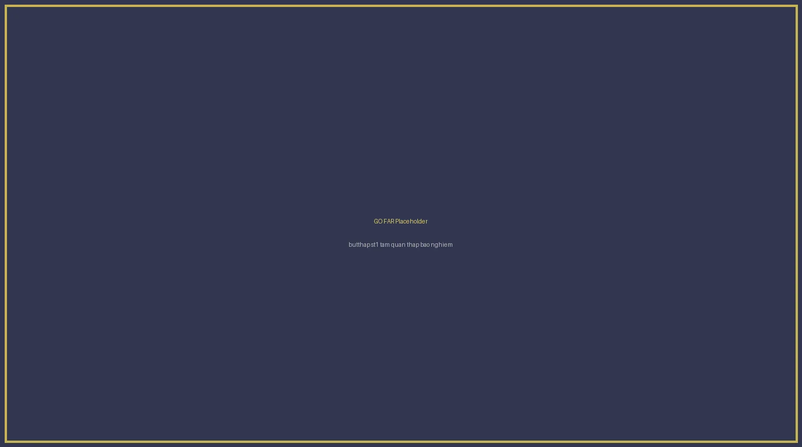

🧭 1. Tổng Quan Chùa Bút Tháp & 4 Bảo Vật Quốc Gia Vô Song
Chùa được khởi dựng từ thế kỷ XIV thời Trần và trải qua nhiều lần trùng tu; đến giai đoạn 1646–1647 dưới thời Lê Trung Hưng, chùa được đại trùng tu quy mô lớn nhất nhờ sự tổ chức của Thiền sư Chuyết Chuyết (1600–1644) thuộc dòng Lâm Tế và đệ tử Minh Hành Tại Tại — được Hoàng thái hậu Trịnh Thị Ngọc Trúc (vợ chúa Trịnh) và vua Lê Thần Tông bảo trợ mạnh mẽ. Chính trong giai đoạn hoàng kim này, Thượng điện được kiến tạo đồ sộ và Tháp Báo Nghiêm 5 tầng đá được xây dựng bên bờ hồ sen năm 1647.
Chùa Bút Tháp sở hữu 4 nhóm Bảo Vật Quốc gia — kỷ lục hiếm có của một ngôi chùa cổ Việt Nam: (1) Tượng Quan Âm Nghìn Mắt Nghìn Tay (Trương tiên sinh tạc năm 1656, cao 3,7m, 42 tay lớn + ~960 tay nhỏ — Bảo vật đợt 1 năm 2012); (2) Bộ Tam Thế Phật (BV 2020); (3) Tòa Cửu Phẩm Liên Hoa — tháp gỗ bát giác xoay được 9 tầng (BV 2020); (4) Hương Án chạm lộng rồng phượng (BV 2020). Quần thể kiến trúc theo dạng nội công ngoại quốc với trục thần đạo dài hơn 100m là một trong những tổng thể kiến trúc gỗ đá hoàn chỉnh nhất còn lại từ thế kỷ XVII tại Việt Nam.
📜 2. Nghi Thức Chiêm Bái & Giữ Gìn Bảo Vật Nghìn Năm
Chùa Bút Tháp lưu giữ 4 Bảo Vật Quốc gia và hơn 100 pho tượng cổ vô giá. Hành giả chiêm bái cần giữ thái độ trang nghiêm, cẩn thận tuyệt đối:
🏮 3 Quy Chuẩn Văn Minh Khi Chiêm Bái Chùa Bút Tháp
🏛️ Trân Trọng 4 Bảo Vật Quốc Gia Vô Giá
Tượng Quan Âm Nghìn Tay và tòa Cửu Phẩm Liên Hoa là các Bảo vật Quốc gia không thể thay thế: không sờ chạm vào bề mặt tượng và tháp gỗ, không dùng đèn flash chụp ảnh gần tượng và không tự ý cố quay tháp Cửu Phẩm Liên Hoa khi chưa được sư thầy cho phép.
🧹 Giữ Trật Tự Và Hàng Lối Nơi Đông Người
Chùa Bút Tháp thu hút đông đảo khách thập phương; tại Thượng Điện thờ Quan Âm Nghìn Tay hãy xếp hàng có trật tự, không chen lấn, không dừng quá lâu trước tượng khi đông người đang chờ chiêm bái.
🌸 Dâng Lễ Chay Thanh Tịnh
Chùa Bút Tháp theo truyền thống Phật giáo thuần chay: chỉ dâng hoa sen tươi, oản ngũ quả, hương trầm và nước sạch tại các bàn thờ. Không dâng thịt cá, không đốt vàng mã và không rải tiền lẻ lên mặt tượng Bảo Vật.
⛩️ 3. Lộ Trình 6 Trạm Ninh Phúc Tự & Bảo Vật Nghìn Tay Đại Bi
Lộ trình 6 trạm đưa hành giả từ Tam Quan cổ và Tháp Báo Nghiêm bờ hồ sen, lần lượt chiêm bái tượng Quan Âm Nghìn Tay Bảo Vật Quốc gia, tòa Cửu Phẩm Liên Hoa xoay thần kỳ, Hương Án chạm lộng rực rỡ, Nhà Tổ Chuyết Chuyết và vườn tháp Tôn Đức bên hồ Tịnh Tâm.
Hành Trình Đại Bi — Chùa Bút Tháp Ninh Phúc Tự
Chiêm ngưỡng 4 Bảo Vật Quốc gia dưới một mái chùa, lắng nghe tiếng chuông Ninh Phúc Tự ngân vang bên hồ Tịnh Tâm và trì tụng văn khấn Đại Bi Quan Âm Nghìn Mắt Nghìn Tay.

Chùa Bút Tháp được đặt tên dân gian theo hình dáng Tháp Báo Nghiêm 5 tầng bằng đá xanh đứng sừng sững như bút chỉ trời bên bờ hồ sen trước cổng chùa. Tháp được xây năm 1647 để tôn trí xá lợi và tưởng niệm công đức của Thiền sư Chuyết Chuyết — vị Tổ sư dòng Lâm Tế đã cùng đệ tử Minh Hành Tại Tại tổ chức đại trùng tu chùa trong những năm 1646–1647. Từng khối đá xanh của 5 tầng tháp đều được chạm khắc tỉ mỉ với hoa sen, hoa dây và hoa văn hồi văn — kỹ thuật chạm đá tiêu biểu cho nghệ thuật điêu khắc Lê Trung Hưng thế kỷ XVII. Trục thần đạo thẳng tắp dài hơn 100m từ Tam Quan xuyên suốt qua các tòa nhà đến Hậu Đường tạo nên chiều sâu không gian thiêng liêng và uy nghiêm bậc nhất trong số các chùa cổ vùng Kinh Bắc.
🗼 Tháp Báo Nghiêm — Biểu Tượng Đất Trời Lâm Tế
- Tháp Báo Nghiêm (hay Tháp Chuyết Chuyết) là tháp đá 5 tầng dạng bình đồ vuông hiếm có, cao khoảng 13m, là biểu tượng kiến trúc đặc trưng nhất của Chùa Bút Tháp.
- Mỗi tầng tháp có 4 cửa vòm nhỏ hướng tứ phương, bên trong đặt tượng Phật nhỏ — tháp vừa là công trình tưởng niệm vừa là bảo tháp thờ Phật.
- Ánh hoàng hôn chiếu lên tháp đá xanh bên hồ sen là khung cảnh đẹp nhất của Chùa Bút Tháp — không nên bỏ lỡ nếu ở lại đến chiều.
🌸 Hồ Sen & Trục Thần Đạo Trăm Mét
- Hồ trước chùa trồng sen trắng và sen hồng cổ — mùa hoa nở (tháng 5–8) là thời điểm đẹp nhất để chiêm bái và chụp ảnh với Tháp Báo Nghiêm làm nền.
- Trục thần đạo >100m là quy hoạch kiến trúc độc đáo, thẳng từ Tam Quan qua Tiền Đường, Thượng Điện đến Nhà Thượng và Hậu Đường.
- Chùa không thu vé vào cửa; đóng góp công đức theo lòng thành tại hòm phước sương trước Tiền Đường.
CHỨNG NHẬN CHIÊM BÁI CHÙA BÚT THÁP VIÊN MÃN
Chúc mừng bạn đã hoàn thành trọn vẹn lộ trình chiêm bái 6 trạm tại Di tích Quốc gia đặc biệt Chùa Bút Tháp (Ninh Phúc Tự), Thuận Thành, Bắc Ninh. Nguyện cầu Đức Quan Âm Nghìn Mắt Nghìn Tay và mười phương Chư Phật gia hộ thân tâm thường an, đại bi tâm ngày càng rộng mở, gia đình hòa thuận phúc lộc dồi dào.
🧭 4. Lịch Trình 1 Ngày Thuận Thành — Chùa Bút Tháp & Vùng Kinh Bắc Bờ Đuống
Hành trình 1 ngày về đất Kinh Bắc Thuận Thành (cách trung tâm Hà Nội ~35km theo quốc lộ 1A hoặc cao tốc Hà Nội – Bắc Giang, khoảng 50 phút):
Buổi Sáng (07h30 – 11h30): Tháp Báo Nghiêm 1647, Quan Âm Nghìn Tay & Cửu Phẩm Liên Hoa
- 07h30: Khởi hành từ Hà Nội về phường Trí Quả, thị xã Thuận Thành, tỉnh Bắc Ninh.
- 08h20: Chiêm ngưỡng Tháp Báo Nghiêm 5 tầng đá 1647 bên hồ sen bát ngát, bước qua Tam Quan vào lễ bái tại Thượng Điện trước tượng Quan Âm Nghìn Mắt Nghìn Tay Bảo Vật Quốc gia 1656.
- 10h00: Chiêm ngưỡng Tòa Cửu Phẩm Liên Hoa — tháp gỗ bát giác 9 tầng xoay được độc nhất Việt Nam và Hương Án chạm lộng rồng phượng Bảo Vật Quốc gia 2020.
Buổi Trưa (11h30 – 13h30): Cơm Chay Thuận Thành & Dạo Bờ Sông Đuống
Dùng bữa trưa thanh đạm tại khu ẩm thực chay quanh chùa: bánh khúc xanh nõn, bún đậu chay, canh rau ngót đậu phụ và xôi ngũ sắc; uống chén nước chè xanh tươi mát bờ sông Đuống.
Buổi Chiều (13h45 – 17h00): Nhà Tổ Chuyết Chuyết, Vườn Tháp & Hồ Tịnh Tâm Sen Cổ
- 13h45: Viếng Nhà Trung và Nhà Tổ Chuyết Chuyết — không gian tưởng niệm vị Lâm Tế Tổ sư đã tổng kiến trúc nên kiệt tác Ninh Phúc Tự.
- 15h00: Thiền hành quanh Vườn Tháp Tôn Đức và dừng chân ngắm Hồ Tịnh Tâm với những đóa sen cổ bung nở mầu hồng phấn trước khi hạ sơn trở về Hà Nội.